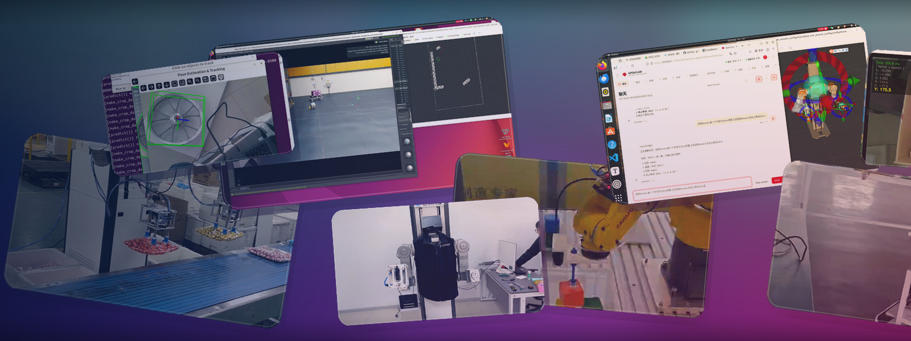
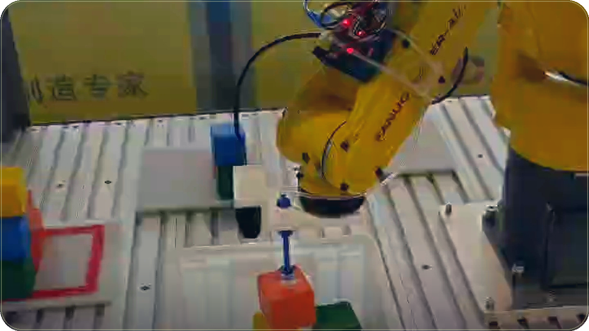
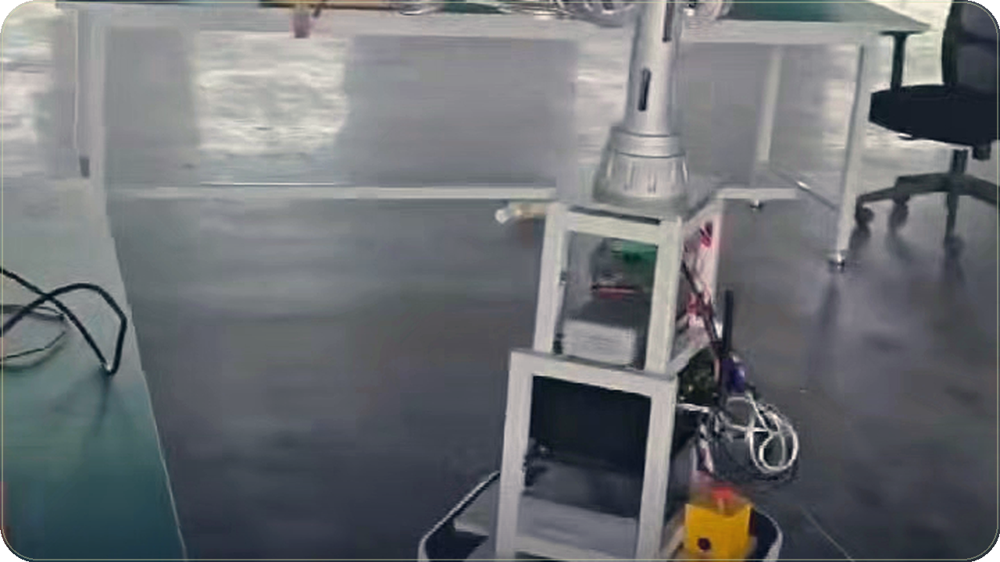
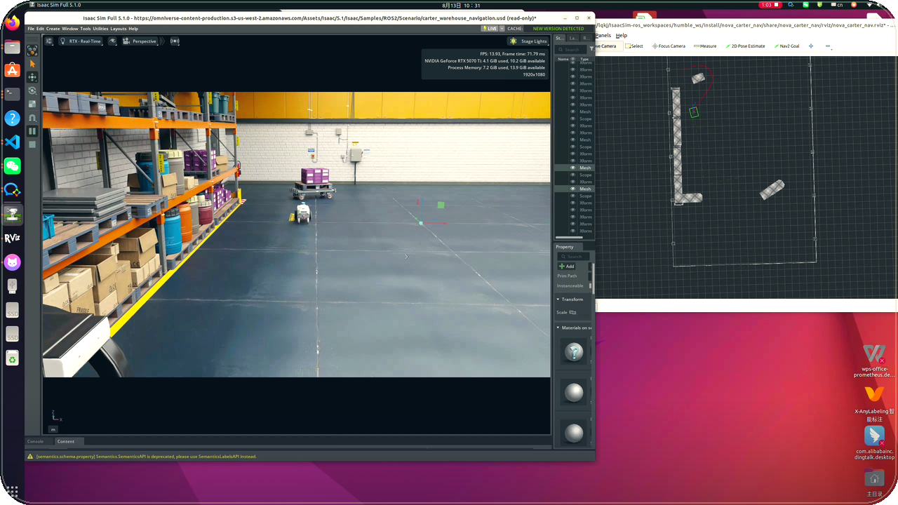
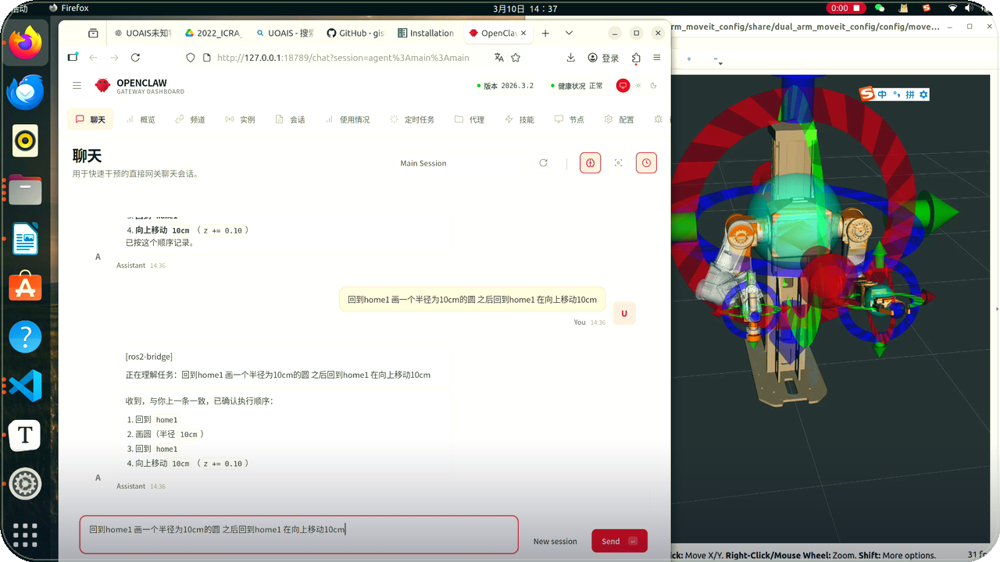
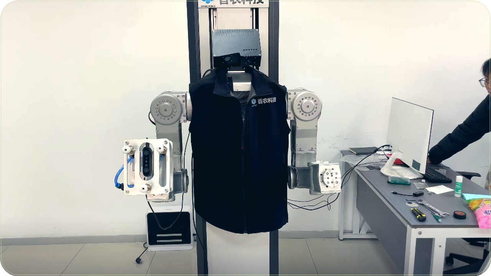
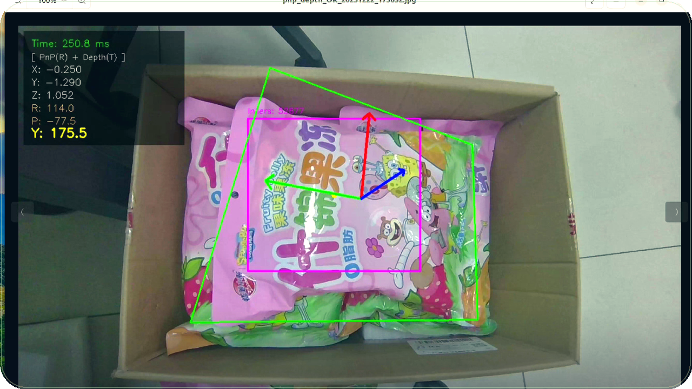

About
关于我
我是 muxintian，25 岁，研三研究生。研究兴趣是具身智能（embodied AI）和计算机视觉：让机器人看清物体的姿态，再规划动作，完成操作和导航。
实验和项目记在 Bilibili，昵称 Mwaitwait。这里的 12 条视频从 2025 年 10 月排到 2026 年 9 月：ROS 2 课程和实习 vlog，6D 姿态估计，MoveIt 2 规划，OpenClaw 把语言接到机械臂，Isaac Sim 里的 Nav2，以及双臂上下料、搭积木和移动抓取送货。
另外，中国机器人及人工智能大赛国家一等奖。
- 25岁
- 研三研究生
- 270Bilibili 关注者
- 12条公开视频
Stack
视频里出现过的技术
这些标签都来自公开视频的标题和简介。点一个，下面的作品会按它筛选。
Bench
场景和技能图
拖动可以绕着实验台看。点一个部件或图上的节点。节点只来自这页已经写过的技术。
拖动环视。点机械臂、相机，或绿色的仿真板。
这里用不了 WebGL。上面的技术标签仍然可以筛选视频。
点一个节点会拉近，并筛选下面的视频。
Work
Bilibili 视频
12 条公开视频。点进卡片会打开原片；有项目页的会先进入项目笔记。日期是北京时间。
12 条视频

工业具身智能挑战赛 机械臂搭积木
在 Bilibili 打开
双臂机器人移动抓取送货
采用机械臂视觉规控，加上小车自主导航，分层架构。
在 Bilibili 打开
Isaac sim部署nav2实现自主导航
在英伟达的 Isaac Sim 里部署 Nav2 导航算法。
查看项目
使用openclaw对机器人进行简单控制
前端由 OpenClaw 与 GPT 做自然语言交互和语义解析；中间层是 Node.js 网关、ROS 2 Topic/Service 和 C++ 桥接节点；后端用 ROS 2 与 MoveIt 2 做机械臂动作规划。
在 Bilibili 打开
6D姿态视觉定位+Moveit2规划
系统版本：Ubuntu 22.04，ROS 2 Humble。
在 Bilibili 打开
6D姿态估计（深度学习版）
相机是 RealSense D415，使用 FoundationPose 的 ROS 2 版本。CAD 用腾讯混元建模，再用建模工具微调。
查看项目
6D姿态估计（传统cv算法版）
相机是奥比中光 Gemini 335。方法是特征点匹配，加上深度法向量。
查看项目
教程
ros2机器人导航Nav2教程
视频简介是 Udemy 课程链接。
在 Bilibili 打开
Vlog
ros2机器人实习vlog
欢迎大家一起学习交流，共同进步。
在 Bilibili 打开
教程
ros2机器人障碍物避障课程
接在 ROS 2 机器人运动规划课程之后。简介附有 Udemy 链接。
在 Bilibili 打开
教程
ros2机器人运动规划课程
一个 Udemy 上的 ROS 2 机器人运动规划课程。欢迎一起学习交流。
在 Bilibili 打开这个标签下没有对应视频。
Notes
技术笔记
写在视频旁边的实用清单。目前是草稿，作者之后会再改。这里不补充视频里没有的结果。
Lab
实验室角落
这些是玩具，不是实验结果。这里不会多写视频里没有的数字。
两连杆小手臂
鼠标就是目标点。具身智能的一小步：朝看得到的点伸手。
这不是 FoundationPose，只是一个会转的坐标系。真要 6D，还得有滚转、俯仰和偏航，这个方块测不了。
从视频里摘一句
公开视频一共 12 条，从 2025 年 10 月到 2026 年 9 月。
本机的一颗心
只存在这台浏览器里，没有服务器在计数。
Timeline
按发布日期排列
从 2025 年 10 月的课程和实习 vlog，到 2026 年 9 月的双臂与移动操作。点标题回到对应视频。
2025.10 · 课程与实习
2025.12 – 2026.01 · 6D 姿态与规划
2026.03 · 语言到动作
2026.08 · 仿真导航
2026.09 · 具身操作
Contact
联系
想聊聊机器人或视觉，写邮件就好。